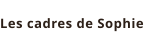
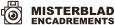

Nos partenaires et fournisseurs
Les maisons avec lesquelles nous travaillons, et les encadreurs qui nous recommandent partout en France.
Nielsen Design, notre fournisseur de référence
Fort d'une expérience de plus de 30 ans dans l'encadrement, Nielsen réunit une équipe de passionnés qui conçoit chaque jour des baguettes et des cadres pour rendre votre intérieur aussi parfait que possible. Nature, Color, Design, Charme : quatre univers, mille possibilités.
Nous sommes revendeur Nielsen à Luxembourg. Le configurateur en ligne reprend les baguettes, passe-partout et verres de la marque. Le Click & Collect se fait à Hollerich, souvent dans l'heure. Quand le format sort du catalogue, nous passons au sur-mesure à l'atelier, toujours avec la même exigence de coupe et d'assemblage.
Visiter le site NielsenIls nous recommandent
Un réseau d'encadreurs indépendants, de Bordeaux à Paris, nous adresse des clients de passage au Luxembourg. Nous travaillons dans le même esprit : conseil à l'atelier, pas de cadre anonyme de grande surface. Si vous venez d'une de ces maisons, dites-le-nous : nous reprenons le fil du conseil sans tout recommencer. Nielsen Design reste notre fournisseur de baguettes et de cadres standards à Hollerich, Luxembourg.

Les cadres de SophieTassin-la-Demi-Lune
MisterbladClichy